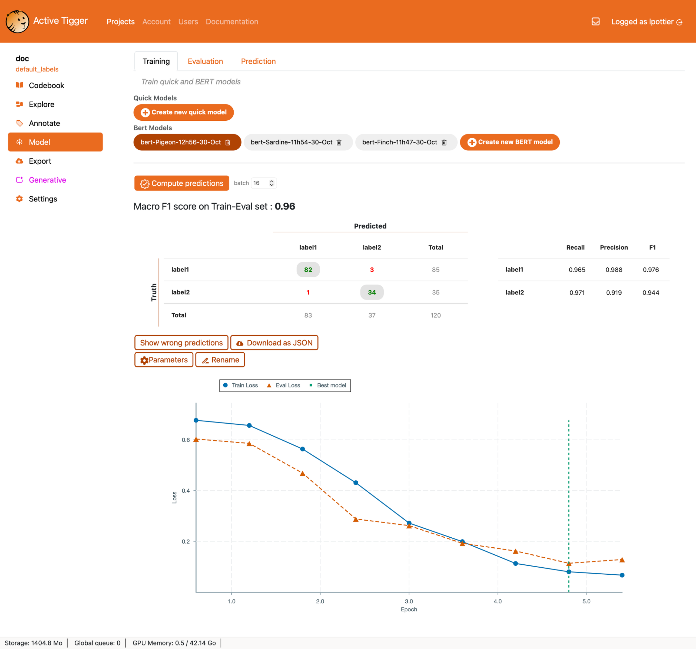

Model Page
The model panel allows the training and evaluation of models, as well as the final prediction over whole datasets.
Training
This section describes the Training tab, the parameters available for training as well as the key insights displayed on the page. Every action in this tab is performed on the train dataset, that is the subset of the train set where labels exist.

Quick Models
The Quick Models are classification models from scikit-learn trained on pre-computed features (learn more about features). They are quick to train and do not require GPUs. These models can be used for Active Learning in the Annotate page.
When launching a model training, the model will be trained on the subset of the train set where labels exist. For this reason, there must be a few label annotated for each category (around 10). Once trained, the model will predict the labels for the rest of the train set in order to be used in Active Learning (see Annotation page)
Models available include:
- Logistic model with L2 penalty (default): A linear classifier that combines features with weighted coefficients and applies an L2 (ridge) penalty to keep weights small and reduce overfitting. The parameters are:
- Cost: Inverse of regularization strength (scikit-learn's
C). Lower values mean stronger regularization (smaller weights); higher values fit the training data more closely.
- Cost: Inverse of regularization strength (scikit-learn's
- Logistic model with L1 penalty: Same as above but with an L1 (lasso) penalty, which tends to drive uninformative feature weights exactly to zero (sparse model). Useful for feature selection. The parameters are:
- Cost: Same as for L2 — lower values mean stronger regularization.
- k-Nearest-Neighbors (KNN): Classifies input based on the label of the k-nearest neighbors from the trainset. The parameters are:
- Number of neighbors: Number of neighbors to look at to choose the label.
- Random Forest: A collection of Decision Tree classifiers that split the input space to generate a label. The parameters are:
- Number of estimators: The number of decision trees in the forest.
- Max features: The number of columns from the embeddings to consider per tree.
- Multinomial Naive Bayes classifier: A probabilistic classifier that assumes features are conditionally independent given the label and follow a multinomial distribution. Works well on count-based features (DFM, n-grams). The parameters are:
- Alpha: Additive (Laplace/Lidstone) smoothing parameter.
0means no smoothing; higher values smooth probability estimates and reduce the effect of unseen feature/label combinations. - Fit prior: If
True, learn class prior probabilities from the data; ifFalse, use a uniform prior.
- Alpha: Additive (Laplace/Lidstone) smoothing parameter.
Warning
All features are scaled before fitting the Quick Model.
Features are scaled using the StandardScaler from scikit-learn
On top of model-specific parameters, additional parameters can be set:
- Model name: The name used as a reference in the interface. It must be unique within a project.
- Automatically balance labels: If ticked, the model will be trained on a subset of the train dataset2 constructed by picking an equal number of inputs across labels.
- Train-eval split size: The share of your train set that will be allocated to evaluating the model at every training step.
- 10-fold cross validation: Computes performance test using the 10-fold cross validation technique.
- Labels to ignore: Selected labels will be ignored. You need at least two labels to start training a model. Models with ignored labels are available for Active Learning (see Annotation page).
BERT Models
The BERT Models are pre-trained encoders models with a classification layer trained with the HuggingFace framework. They can take a dozen minutes to train and require GPUs1. These models can be used for Active Learning in the Annotate page. More explanations are available here.
When launching a model training, the model will be trained on the subset of the train set where labels exist. For this reason, there must be a few label annotated for each category (around 10). After training, the best model (across epochs / checkpoints) will be used to predict the labels on the whole trainset to be used in Active Learning (see Annotation page).
The hyperparameters for the model are: (see this page for standard values)
- Name for the model The name used as a reference in the interface.
- Model base: The pretrained model used for generating the embeddings. Models are loaded through the HuggingFace interface (learn more about model choice in the FAQ).
- Context window size (in tokens): The maximum number of tokens per input that the model can consider. Longer inputs will be truncated to match this size. If selecting Auto adjust Max context window the window size will be set to the length of the longest input of the dataset.
- Epochs: The number of times the model will be trained on the train dataset2.
- Learning Rate: The learning step value used during training.
- Weight Decay: The probability for a weight to not be updated during the backward propagation.
- Use GPU: If ticked, the model will be trained on GPU if available.
- Batch size: The number of inputs provided to the model at once. Large batch size makes training faster but requires higher tier hardware.
- Gradient Accumulation: The number of batches used to update the weights during the backward propagation.
- Eval: The number of evaluations — scoring performance on the train-eval dataset — performed during training.
- Train-eval split size: The ratio of elements in the train dataset2 that will be used to assess the model performance during training.
- Balance labels: If ticked, the train dataset2 will be constructed using the same number of text inputs per label.
- Loss: The loss function used to optimise the model weights for training.
- Keep the best model: If ticked, the best model (i.e. the one with the lowest evaluation loss) across epochs/checkpoints is kept instead of the final one.
- Label threshold: The minimum number of annotations per label required.
- Labels to ignore: Inputs with these labels will be dropped out of the train dataset2.
Users can download the trained model's files as well as the predictions on the project's dataset or on an external dataset in the Export page.
Measuring the quality of models
For both classifiers, the application displays performance scores: the Macro F1-Score as well as the confusion matrix and scores per label (Recall, Precision and F1)
Warning
The performances are computed on the train-eval dataset (lean more about this set here).
- Show wrong predictions to display the text inputs where the classification failed and compare the prediction with your annotation.
- Download as JSON to download the confusion matrix, scores per label and wrong predictions as a JSON file.
- Parameters to show the parameters of the model and the training arguments.
- Rename to rename the model.
For BERT models only, the application also displays the loss curves. Depending on the shape of the curves and on the performance scores, you may need to train several BERT models with different hyperparameters to try to improve their performance: see our guides to help you read the loss curves and change hyperparameters.
Evaluation
The Evaluation tab shows similar components as the Training tab. After selecting a classifier, Compute predictions to compute the predictions of the model on the full train, validation and test sets2, if they exist. Performance scores are presented similarly as in the Training tab.
Note
The predictions over the three datasets have different purposes: those of the train set are given as indication of the model's learning, those of the validation set are used to compare models and improve hyperparameters, and those of the test set are used to evaluate the performance of your final model. Learn more on the fine-tuning process.
Prediction
Once you have selected the model with the best performance, you can use the Prediction tab to apply the model to the rest of your data.
Select the right model, then: - Predictions on the entire dataset to compute predictions over the data already imported in ActiveTigger but that has not been manually annotated. - Prediction on an external dataset to import a dataset (in CSV, XLSX or Parquet format) and compute predictions over this data.
You can download the predictions in the Export page.
Warning
If predictions have already been computed on an external dataset, computing predictions over a new imported dataset will overwrite the current predictions.